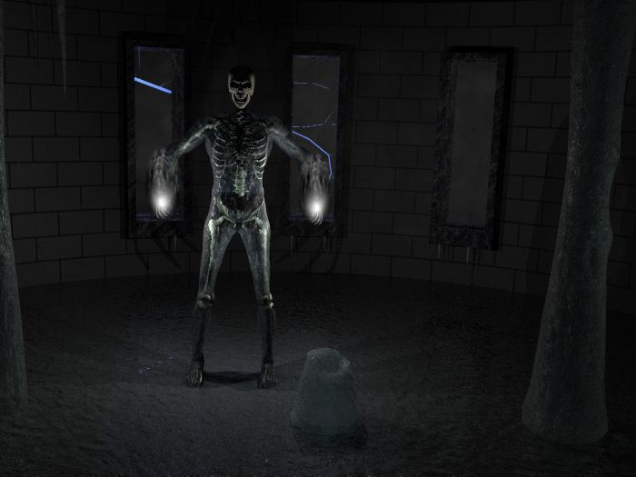
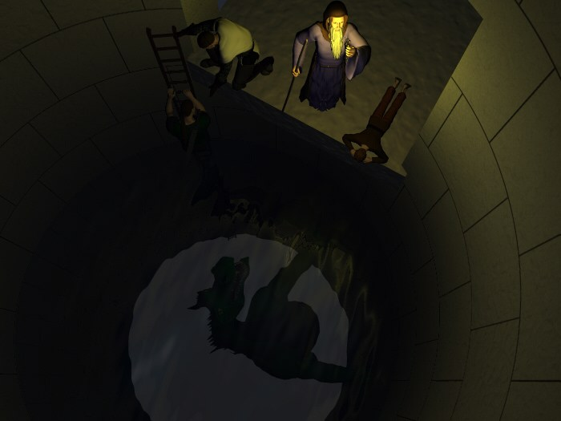

The skeleton figure was created using Poser 4. The image was rendered in Bryce 4. The ice columns and icicles were created using Amorphium and Cinema 4D XL.

All of the humanoid figures in this image were created using Poser, and the rendering done in Bryce. The dragon is a modified version of the Zygote dragon, and Kurik is based on the Zygote knight. Rosvenir was based on PhilC's Wizard from bbay.com.